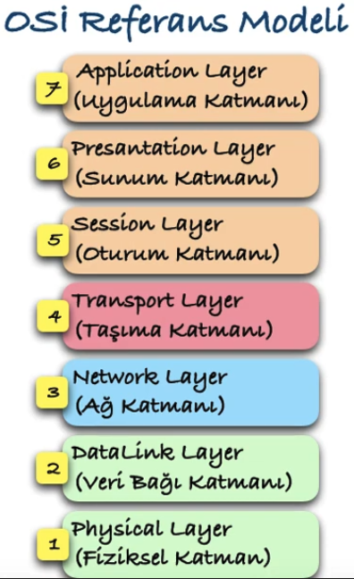
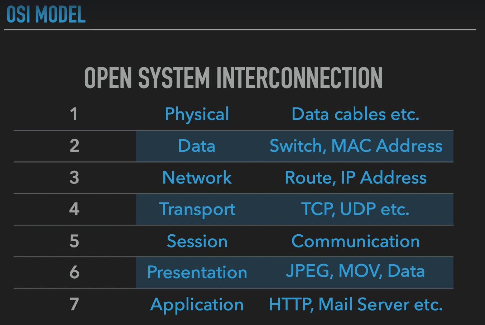
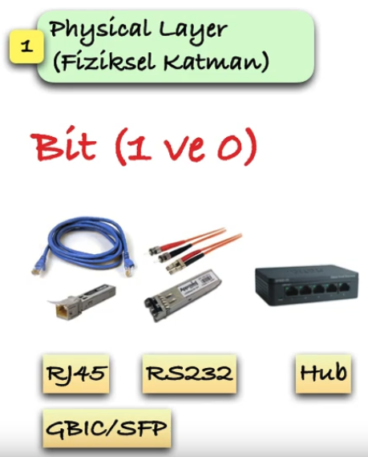
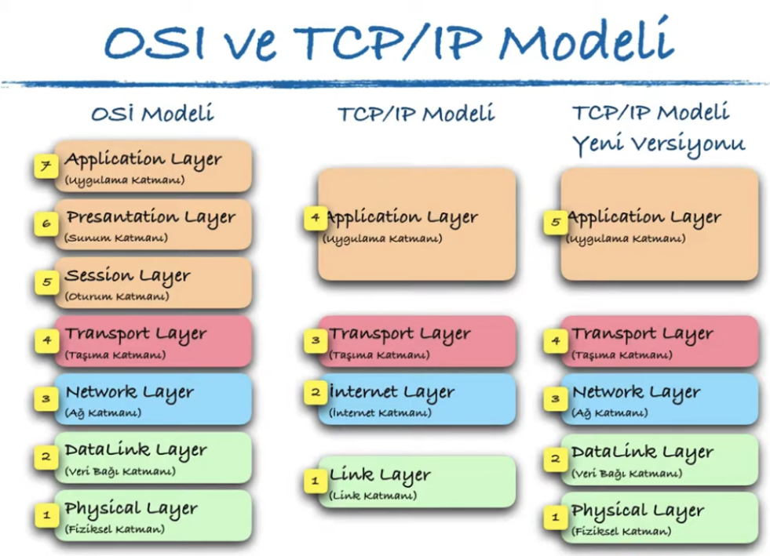
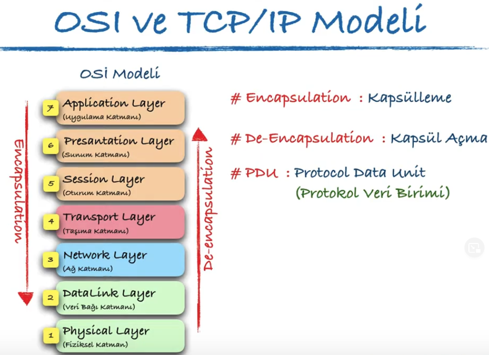
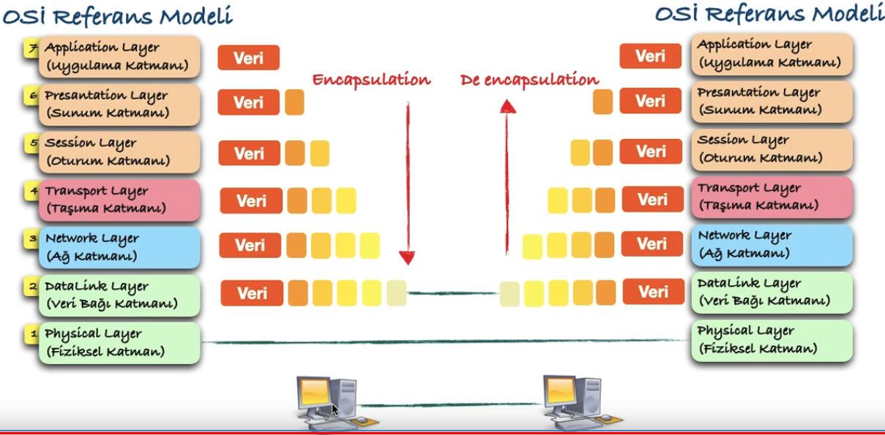

OSI Model
OSI modeli
Open Systems Interconnection modeli ISO tarafından geliştirilmiştir. Bu modelle, ağ farkındalığına sahip cihazlarda çalışan uygulamaların birbirleriyle nasıl iletişim kuracakları tanımlanır


Encapsulation & De encapsulation
